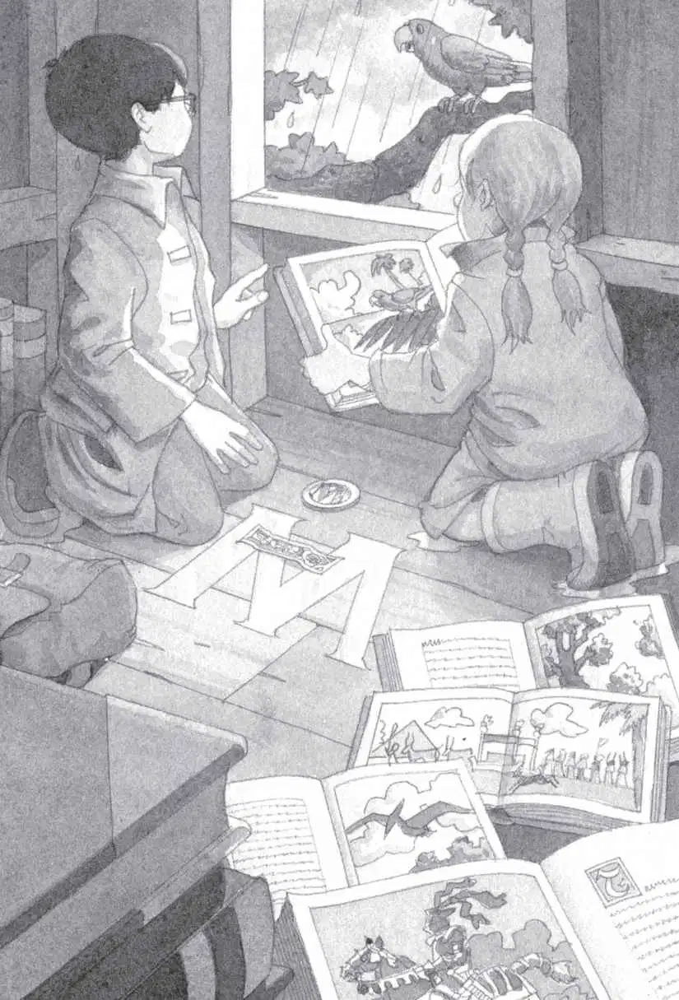

Jack stared out his bedroom window. The rain kept falling. And falling.
“The TV said it would stop by noon,” said Annie, his seven-year-old sister.
“It’s already past noon,” said Jack.
“But we have to go to the tree house,” said Annie. “I have a feeling the M person will be there today.”
Jack pushed his glasses into place and took a deep breath. He wasn’t sure he was ready to meet the M person yet. The mysterious person who had put all the books in the magic tree house.
“Come on,” said Annie.
Jack sighed. “Okay,” he said. “You get our raincoats and boots. I’ll get the medallion and bookmark.”
Annie ran to get their rain gear.
Jack reached into his drawer. He took out the medallion.
It was gold. The letter M was engraved on it.
Then he took out the bookmark. It was made of blue leather. It had the same M on it.
Both M’s matched the M that was on the floor of the tree house.
Jack put the medallion and bookmark into his backpack. Then he threw in his notebook and pencil. Jack liked to take notes about important things.
“I got our rain stuff!” called Annie.
Jack picked up his pack and went downstairs. Annie was waiting by the back door. She was putting on her boots. “Meet you outside,” she said.
Jack pulled on his raincoat and boots. Then he put on his backpack and joined her.
The wind was blowing hard.
“Ready! Set! Go!” shouted Annie.
They kept their heads down and charged into the rainy wind.
Soon they were in the Frog Creek woods.
Tree branches swayed, flinging rainwater everywhere.
“Yuck!” said Annie.
They splashed through puddles. Until they came to the tallest oak tree in the woods.
They looked up.
Tucked between two branches was the tree house. It looked dark and lonely against the stormy sky.
Hanging from the tree house was a rope ladder. It was blowing in the wind.
Jack thought of all the books up there. He hoped they weren’t getting wet.
“The M person’s been there,” said Annie.
Jack caught his breath. “How can you tell?” he said.
“I can feel it,” she whispered.
She grabbed the rope ladder and started up. Jack followed.
Inside the tree house it was chilly and damp.
But the books were dry. They were all neatly stacked along the wall. Just the way they had been the day before.
Annie picked up a castle book on top of one stack. It had taken them to the time of castles.
“Remember the knight?” she said.
Jack nodded. He would never forget the knight who had helped them.
Annie put down the castle book. She picked up the next book on the stack.
It was the dinosaur book that had taken them to the time of dinosaurs.
“Remember?” she said.
Jack nodded.
He’d never forget the pteranodon who had saved him from the Tyrannosaurus rex.
Then Annie held up a book about ancient Egypt.
“Meow,” she said.
Jack smiled. The Egypt book had taken them to the time of pyramids. A black cat had come to the rescue there.
“And here’s the book about home,” Annie said.
She held up the book with the picture of their hometown in it.
Frog Creek, Pennsylvania.
Jack smiled again. The Pennsylvania book had brought them back home at the end of each of their adventures.
Jack sighed. Okay. He still had two main questions.
Who was the M person who had put all the books here?
And did the knight, the pteranodon, and the cat all know the M person?
Finally Jack reached into his backpack. He took out the gold medallion and the leather bookmark. He placed them on the floor. Right over the spot where the M glowed faintly in the wood.
Rain blew into the tree house.
“Brr!” said Annie. “It’s not very cozy today.”
Jack agreed with her. It was too wet and cold.
“Look.” Annie pointed to an open book lying in the corner. “I don’t remember a book being open.”
“Me neither,” said Jack.
Annie picked up the book. She stared at the picture on the page.
“Wow, this place looks great.” She showed the picture to Jack.
He saw a sunny beach. A big green parrot sitting in a palm tree. And a ship sailing on a blue sea.
Another gust of rainy wind blew into the tree house.
Annie pointed to the picture. “I wish we were there instead of here,” she said.

“Yeah,” said Jack. “But where is there?”
“Too late!” came a squawk.
Jack and Annie turned quickly.
Sitting on a branch outside the window ledge of the tree house was a green parrot. Exactly like the parrot in the picture.
“Too late!” the parrot squawked again.
“A talking parrot!” said Annie. “Is your name Polly? Can I call you Polly?”
Suddenly the wind started to whistle.
“Oh no! Now we’re in big trouble!” said Jack.
The wind blew harder.
The leaves shook.
The tree house started to spin. Faster and faster!
Jack squeezed his eyes shut. Then everything was still.
Absolutely still.
Jack opened his eyes.
“Too late!” squawked Polly.